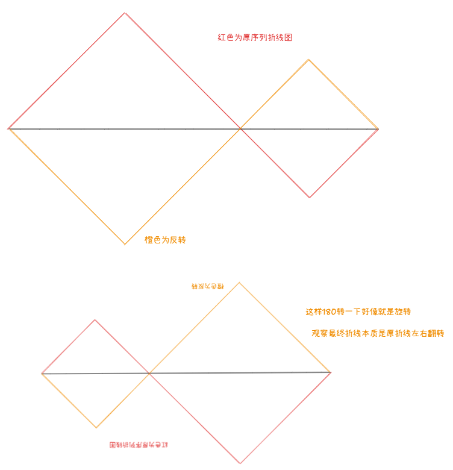

浅谈一类欧拉回路图论建模
很久以前做过的一个套路，又一次遇到了，概述一下的话大概就是：
一个序列可以进行任意次的区间操作，然后求序列的字典序最小值或者变成某个序列。
然后这个区间操作时具备一些特征的：这个一般就是说序列上一点可以映射到一个值，然后这个区间操作不会改变这个相邻的值关系。
这个东西比较经典的就是翻转，因为反转的时候内部的无序点对集合是不变的，区间两端加以限定的话那整体无序点对集合也不变。
然后这个东西的做法是对着这个不变量的值建点，然后相邻的映射值之间建立边，最后跑一个带优先级的欧拉回路。
这个东西还是比较抽象，还是从具体题目来讲比较好:
有一个长度为 的数组 。你可以对其进行如下操作：
- 选择两个下标 和 ，满足 且 。然后，将第 个到第 个元素的子段翻转，即将 变为 。
你还给定了另一个长度为 的数组 ，它是 的一个排列。请找出一组不超过 次操作的方案，将数组 变为 ，或者报告不存在这样的操作序列。
翻转操作和边界限制（和刚刚说的一模一样
这个修改由于两端存在 所以其实不会修改全局的 无序点对集合。
那这个东西其实就是：对 建立边，每一对相邻的 建立一条无向边，一次修改在视为有向图上的本质就是反转一个环，那我们把这个东西看成无向图就是对的。
补充一下为什么存在这个构造的证明：唯一的疑问可能是访问环的顺序被任意确定了，但是其实我们操作对应的环并不要求是简单环，所以我们可以通过从某个点出发的环集合反向来任意交换环顺序，从操作上来讲，我们把这个序列按照当前值 划分成若干个块，那么我们显然可以通过选择两个不相邻的 来交换块间顺序，同排序一样可以任意确定顺序。
最后的结论就是看作一个无向图跑欧拉回路。
再来一道（
给定一个只包含 和 的字符串 。你可以进行如下操作：
- 选择 的一个非空连续子串，且该子串中 和 的数量相等；
- 翻转该子串中的所有字符，即将所有 变为 ，所有 变为 ；
- 反转该子串。
例如，考虑 ，可以进行如下操作：
- 选择前六个字符作为操作的子串：00111011。注意该子串中 和 的数量相等，因此是合法的选择。选择子串 0、110 或整个字符串都不是合法选择。
- 翻转该子串中的所有字符：11000111。
- 反转该子串：10001111。
请你求出经过若干次（可以为零次）上述操作后，能够得到的字典序最小的字符串。
定义映射为将这个序列中的 看作 ，将 看作 以后的前缀和 。
因为区间要求是 的数量和 的数量相等，所以这个东西对前缀和的贡献是 ，即 。

对的对的（相邻无序点对集合仍然是不变的，和上面一样建图跑欧拉回路即可（。